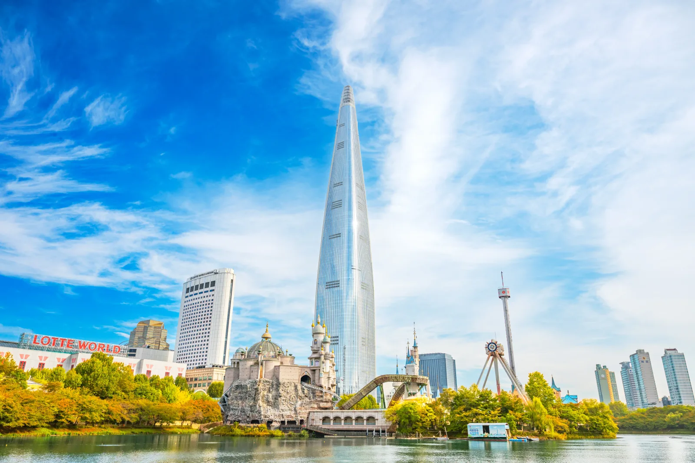
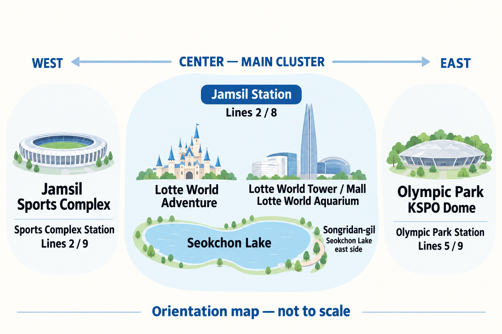
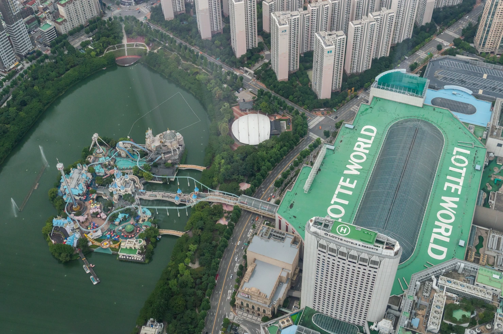
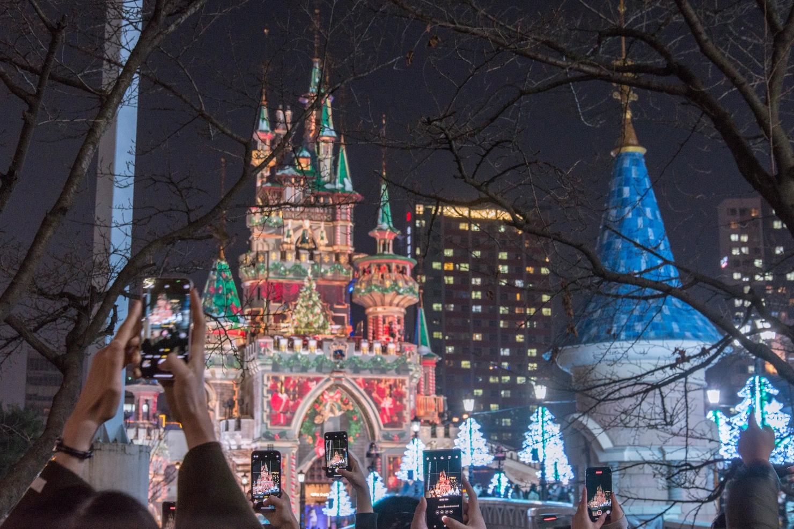
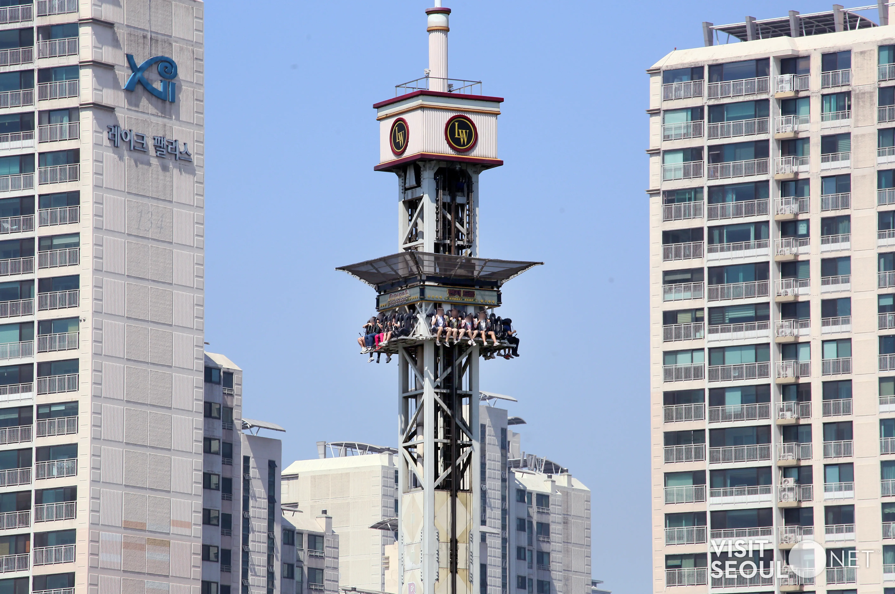
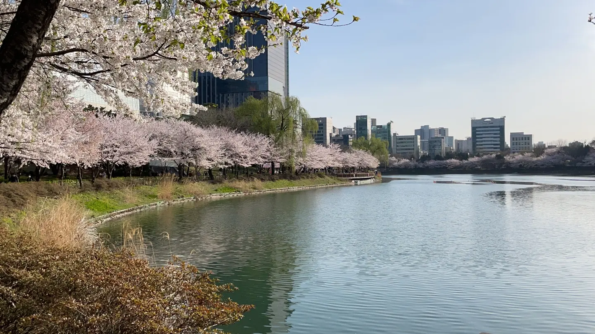
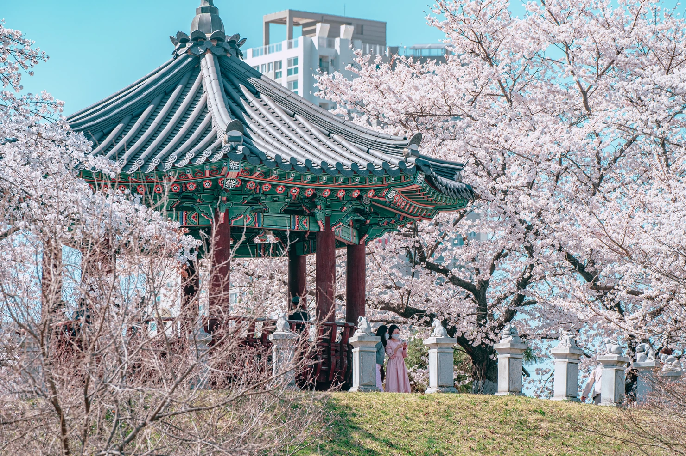
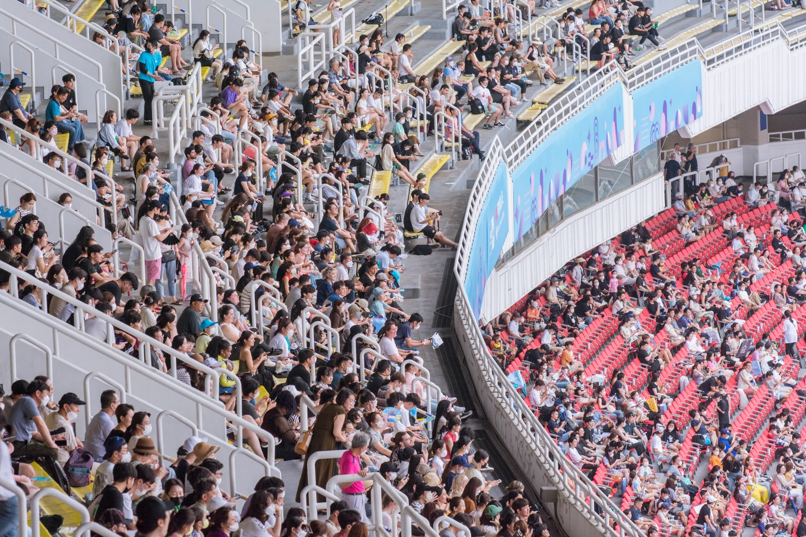

Jamsil Travel Guide 2026
Jamsil gets confusing when you treat everything with “Lotte” in the name as one attraction.
For most travelers, the better question is simpler: Are you coming for Lotte World, for the tower-and-lake side of Jamsil, or for a game or concert?
Those are three different days. Trying to combine all three usually means spending more time walking, waiting and crossing Songpa than actually enjoying any of them.
Choose your Jamsil day first
You do not need a long list of attractions before coming to Jamsil. You need to decide what is carrying the day.
If Lotte World is the reason you are coming
Give the park most of the day.
The mistake is planning Lotte World as one stop between the aquarium, Seoul Sky and Olympic Park. Once queues, meals and tired legs enter the picture, that itinerary falls apart quickly.
If you still have energy after the park, Seokchon Lake or dinner in the mall is a much easier finish.
If you do not care about the theme park
Jamsil still works.
Start with the Tower or Aquarium, move outside to Seokchon Lake, then cross toward Songridan-gil when you are ready to eat or sit down somewhere smaller than the mall.
On a clear day, Seoul Sky can become the last stop rather than the first.
If you are here for baseball or a concert
Build the day around the event.
A KSPO Dome concert belongs to the Olympic Park side of Songpa, while a baseball game belongs to the Sports Complex side. Neither should be treated as a quick extension of the Lotte World cluster.
Finish sightseeing early enough that you are not solving venue entrances, dinner and the last train at the same time.
Jamsil at a Glance
On a map, Jamsil can look like one compact entertainment district. It is easier to understand as one main cluster with two separate branches.
The main cluster is around Jamsil Station: Lotte World Adventure, Lotte World Tower, the mall, the aquarium and Seokchon Lake. Songridan-gil sits beyond the lake when you want cafés or dinner away from the main complex.
Olympic Park and KSPO Dome form the east-side branch. Jamsil Sports Complex sits to the west.

You can connect these areas, but you do not need to put all of them into the same day.
Seokchon Lake itself is not just a small pond between attractions. The official walking route around the East and West Lakes is about 2.5 km, so walking the whole loop is a real part of the itinerary, especially with children or after several hours inside Lotte World.

Start at Jamsil Station — but know which side you need
Jamsil Station is convenient. It is not one front door.
If you are heading to Lotte World Tower, the mall or the aquarium, you are using a different side of the complex from someone heading into Lotte World Adventure.
That matters more when you are carrying a stroller, traveling with children or simply trying not to spend the first 20 minutes underground following the wrong signs.
For the Tower side, think Exit 2. For the Adventure side, follow the Lotte World directions toward Exit 4. Once you are inside the complex, signs are more useful than trying to navigate everything from a street map.
And do not use Jamsil Station as your mental starting point for every Songpa event. If you are going to KSPO Dome, Olympic Park Station is the more relevant station; the official venue guidance points visitors to Lines 5 and 9 and Exit 3.
Route 1 — Give Lotte World the Day
If Lotte World is one of the main reasons you came to Seoul, do not treat it like a two-hour stop.
The park can absorb a full day before you notice it.
Queues are part of that, but so are meals, finding the next ride, moving between the indoor Adventure and outdoor Magic Island, and stopping when someone in the group needs a break.
A better plan is to decide before you enter what would make the day feel successful.
For one person, that may be three major rides.
For a family, it may be a mix of rides, a parade, indoor attractions and enough breaks that nobody is exhausted by mid-afternoon.
Do those priorities first.
Everything after that is extra.
Start earlier if the park matters
A weekday morning gives you more room to change the plan than arriving after lunch and trying to recover lost time.
That matters even more with children.
If the first few hours go well, you can slow down later.
If the park is already crowded, at least you discover that before spending half the day on lower-priority attractions.
The current ticket system also includes an After4 option, but that is a different kind of visit. If Lotte World is the reason for your Jamsil day, build around a full-day entry rather than assuming a late-afternoon ticket will deliver the same experience.
Do not automatically add Olympic Park afterward
This is one of the easiest ways to make a Jamsil itinerary look efficient on a map and feel miserable in real life.
After a full park day, a short walk around Seokchon Lake or dinner nearby is easy to understand.
Crossing Songpa to add Olympic Park, another large venue, or a concert is a different decision.
If Lotte World already carried the day, let it finish the day.

The Queue Changes the Day
The most important Lotte World planning question is not how many rides are inside.
It is how much waiting you are willing to accept.
Recent traveler reports repeatedly describe long waits on popular rides, including weekdays. They also show why people become interested in Magic Pass: not because every visitor needs one, but because a few long queues can completely change what fits into the day.
Pick your priorities before you see the wait board
Do not walk in with a list of fifteen rides you “must” do.
Pick the few that would genuinely disappoint you to miss.
If those queues are reasonable, do them.
If one is already taking a large part of the day, decide whether it is worth that time before joining the line.
That sounds obvious until you are standing there thinking, “We came all this way.”
That is exactly when a 90-minute queue starts controlling the itinerary.

Magic Pass can help, but it is not a second admission ticket
The current Magic Pass is a separate paid add-on. You still need park admission.
It uses an exclusive waiting line for eligible attractions, but it does not remove every wait, it does not apply to every attraction, and quantities are limited. Lotte World currently sells it through its app and warns that it may sell out early.
So the useful question is not:
“Should everyone buy Magic Pass?”
It is:
“Would paying extra protect the part of this day we actually care about?”
If the group mainly wants a handful of popular rides and the park is crowded, the answer may be yes.
If you are visiting with a young child, moving slowly and mixing rides with indoor attractions, meals and breaks, the extra cost may solve less of your problem than you expect.
Booking Lotte World
If Lotte World is carrying the day, check the regular admission options before you arrive.
If fast-track access matters, compare the current Magic Pass rules separately before paying. It is only worth the extra cost when the rides you actually care about justify it.
Families should plan for overload, not just height restrictions
Lotte World can be very convenient for families because so much is concentrated in one place.
That does not mean it is automatically an easy family day.
The indoor park can be noisy and crowded. The layout is multi-level. Young children can get tired long before the adults have finished the ride list.
If one adult is constantly checking the next attraction while the child needs food, a toilet break or somewhere quieter, the itinerary has already become too ambitious.
With small children, a successful day may simply mean fewer rides and fewer transfers.
That is still a full Lotte World day.
Route 2 — Jamsil Without the Theme Park
You do not need to like theme parks to spend a good half-day or full day in Jamsil.
The easier version is to stay around the tower-and-lake side:
Tower or Aquarium → Seokchon Lake → Songridan-gil → Seoul Sky if the weather earns it.
That order gives you room to change the day instead of locking yourself into a schedule before you know the weather or your energy level.
Start indoors if the weather is working against you
On a rainy, very hot or bitterly cold day, the Aquarium and Lotte World Mall give you an easy indoor start.
That does not mean you need to spend the entire day inside the complex.
Once the weather improves, Seokchon Lake is right there. If it does not, you can keep the day mostly indoors without forcing a bad outdoor itinerary.
This is one reason Jamsil works well for families and mixed-age groups: you have somewhere to go when the original plan stops being comfortable.
A simpler indoor option
If rain, heat or cold is pushing the day indoors, the Aquarium is easier to fit around the rest of Jamsil than committing to a full theme-park day.
It makes the most sense when the Aquarium itself is part of the plan — not simply because another Lotte attraction happens to be nearby.
Do not book Seoul Sky into the day too early
Seoul Sky is one of the easiest Jamsil attractions to make conditional.
On a clear day, the view can justify saving it for late afternoon or sunset.
On a hazy or rainy day, going up simply because you already planned it may not be the best use of your time.
Check the actual sky before deciding.
The tower is not going anywhere.
That flexibility is more useful than forcing every major Jamsil attraction into the same checklist.
Decide after you see the sky
If visibility looks good and you still want the view, check the current Seoul Sky ticket then.
If the skyline has disappeared into haze or rain, skip it without trying to rescue the original plan.
Seokchon Lake is a walk, not just a photo stop
The lake looks compact when you stand beside the Lotte complex.
Walking it tells a different story.
East Lake and West Lake together form a route of about 2.5 km, and a relaxed full loop can take around an hour before stops.
You do not need to walk the whole thing.
After Lotte World, children may be done walking.
After the Aquarium, you may only want enough of the lake to get outside and see the tower from a different angle.
That is fine.
The lake works best when it gives the day some breathing room, not when it becomes another task to complete.
Choose the side that fits what comes next
If dinner or cafés are next, moving toward the East Lake and Songridan-gil side makes more sense than completing a full loop just to say you did it.
If you are leaving Lotte World Adventure tired, even a shorter stretch around West Lake may be enough.
This is where a Jamsil itinerary should stay flexible.
Distance matters less than what you are doing afterward.

Use Songridan-gil when you are ready to leave the Lotte bubble
The mall is convenient.
Sometimes that is exactly what you need.
But if you have spent several hours inside Lotte facilities, walking toward Songridan-gil changes the scale of the day.
The area sits beyond Seokchon Lake and gives you smaller restaurants and cafés rather than another floor of a large complex.
You do not need to hunt for one famous café.
Pick this part of the day because you want to sit down, eat, or slow the pace after the larger attractions.
That is enough reason to come over.
Mall or Songridan-gil?
Use the mall when:
- someone is tired
- the weather is poor
- children need an easy meal
- you do not want another walk
- convenience matters more than atmosphere
Walk toward Songridan-gil when:
- you want to get out of the complex
- the group still has energy
- dinner or café time is part of the outing
- you want the second half of Jamsil to feel different from the first
Neither is the “better” choice.
They solve different parts of the day.
Weather Changes the Plan
Jamsil is unusually easy to rearrange because several major activities sit close together but depend on the weather in very different ways.
Rainy day:
Aquarium → Mall → indoor meal. Add the lake only if the rain gives you a break.
Clear day:
Aquarium or Mall → Lake → Songridan-gil → Seoul Sky later.
Hot summer afternoon:
Stay indoors during the worst heat and move to the lake closer to evening.
Hazy day:
Do not build the entire schedule around the observatory. Keep Seoul Sky optional and spend the time lower down if the view is not worth it.
Seoul Sky’s own operating information is date-sensitive, including admission cutoff before closing, so travelers should check the current schedule before going rather than relying on a fixed time printed in a guide.
Olympic Park, Baseball or Concert Day
A game or concert changes the logic of Jamsil.
Do not start with the attraction list. Start with the venue and the time you need to be there.
KSPO Dome is inside Olympic Park, not beside Lotte World. Jamsil Sports Complex sits on the other side of the district. They are both in the broader Jamsil/Songpa area, but they are not interchangeable destinations.
That distinction matters most when thousands of people are arriving or leaving at the same time.
For KSPO Dome, think Olympic Park Station
For KSPO Dome, the useful station is Olympic Park Station on Lines 5 and 9. The venue’s official guidance points visitors to Exit 3.
Do not go to Jamsil Station simply because your hotel search or map says “Jamsil.”
You can combine the concert with the Lotte World area earlier in the day, but leave enough separation between the two.
A comfortable version is:
Jamsil lunch or lake walk → return to the hotel or rest → Olympic Park → concert
A more ambitious version is:
Aquarium or Mall → early dinner → Olympic Park → concert
What usually does not work well is:
Full Lotte World day → rushed dinner → KSPO Dome
That looks possible on a map. After queues, walking and crowds, it can feel like two full days pushed into one.

After the concert, the crowd becomes part of the trip
Do not plan the end of a major concert as if you will walk out, call a car and disappear in five minutes.
Thousands of people may be trying to leave together.
If you are using the subway, know your route before the show ends. If the last train matters, check the actual service that night rather than assuming the final train shown for the station will take you all the way to your destination.
If your hotel is on a direct Line 5 or Line 9 route, that simplicity becomes more valuable after the concert than it looked when you booked the room.
Jamsil Sports Complex is a different branch
The Sports Complex side is where baseball and other large events belong.
Jamsil Sports Complex is served by Subway Lines 2 and 9 and sits west of the main Lotte World cluster. Seoul’s official facility information describes the complex as a large group of stadium and sports facilities rather than one single venue.
For baseball, check the venue on the ticket before building the rest of the day around it.
A baseball day does not need another major attraction
A simple version works well:
Lunch → Jamsilsaenae / market area → game → late dinner
If you still want sightseeing, do it earlier and keep it light.
A palace morning followed by a baseball game can work.
A full theme-park day followed by baseball usually means something gets rushed.
Around the stadium side, Jamsil Saemaeul Traditional Market gives you a more local food option than returning to the Lotte complex.

What to Eat — choose convenience or leave the complex
Jamsil gives you two very different ways to eat.
The first is easy:
stay inside the Lotte complex.
That is the right choice when someone is tired, the weather is bad, children need food now, or you simply do not want another decision.
Convenience has value after several hours of walking.
The second option is to use food as the reason to leave the complex.
Songridan-gil works best after the lake
If you are already on the east side of Seokchon Lake, Songridan-gil is a natural next step.
Go there because you want a smaller restaurant, café or slower end to the day — not because there is one compulsory shop you need to find.
That makes it particularly useful after the Aquarium, Seoul Sky or a lake walk.
Bangi Food Street is better when the group wants a real meal
Bangi Food Street sits across from the east side of Seokchon Lake and has a broad mix of Korean meals, snacks, cafés and pubs.
This is a stronger choice when the group is finished sightseeing and wants dinner to be the final stop rather than another attraction.
You do not need to choose between Songridan-gil and Bangi because one is “better.”
Think about the mood.
Café, smaller shops, slower walk
→ Songridan-gil.
Dinner, drinks, larger choice of restaurants
→ Bangi.
Tired children, rain, no interest in another walk
→ stay inside the mall.
Where to Rest Matters in Jamsil
Jamsil days become tiring because the attractions are large, not because the neighborhood is difficult to understand.
You may spend hours indoors, then walk the lake, then stand again for dinner or an event.
So a break should be part of the plan, especially with children or older travelers.
You do not need to “use” every hour.
A café near the lake, a seat inside the mall or an early meal can be more useful than adding one more attraction simply because it is nearby.
This becomes even more important on a concert day.
If the event starts in the evening, the best use of late afternoon may be doing less.
Arriving at the venue with energy is often worth more than squeezing in another stop.
When the break is the activity
If you want to slow the day down rather than add another attraction, Yeo Yong Guk offers a reservation-based Korean traditional medicine spa experience in Jamsil.
This fits adults, couples and repeat visitors better than a packed family sightseeing schedule. Give it its own time instead of squeezing it between major attractions.
Before paying, check the current treatment duration, reservation timing and cancellation terms on the booking page.
Jamsil With Kids
Jamsil is one of the easier parts of Seoul to build a family day around.
That does not mean every family needs to stay here.
The advantage is concentration.
Lotte World, the Aquarium, the mall, Seokchon Lake and plenty of places to eat are close enough that you can change the plan without crossing Seoul every time someone gets tired.
That flexibility matters more with children than squeezing one more attraction into the day.
One major activity is usually enough
With younger children, choose the thing carrying the day.
If that is Lotte World, let it be Lotte World.
If rides are not the priority, the Aquarium plus the lake and an early dinner can already make a full family outing.
Trying to combine the park, Aquarium, Seoul Sky and Olympic Park because they all appear under “Jamsil” on a map usually creates more walking and waiting than the family needs.
Build in somewhere to stop
The mall is not the most exciting part of Jamsil.
For a tired family, that can be exactly why it is useful.
Bathrooms, food, indoor seating and an easy way to get out of bad weather can save the second half of the day.
A break is not wasted travel time if it keeps the rest of the itinerary usable.
Check ride restrictions before promising a ride
Do not tell a child that a particular ride is definitely happening before checking the current restrictions.
Height, age and operating conditions vary by attraction and can change.
If one ride is the reason someone is excited about the visit, check the current Lotte World information before the day starts rather than discovering the restriction at the entrance.
Common Mistakes in Jamsil
Jamsil is not difficult once you understand the layout.
Most problems come from assuming that everything nearby belongs to the same visit.
Mistake 1: Thinking one Lotte ticket covers everything
Lotte World Adventure, the Aquarium and Seoul Sky are separate attractions.
They sit close together and may appear in combination products, but that does not mean a standard admission ticket includes all of them.
Decide what you actually want before buying tickets.
A combo can save money when you genuinely want both attractions.
It is not a bargain if the second attraction becomes something you rush through because you already paid for it.
Mistake 2: Putting Lotte World and Olympic Park into the same full day
They are both in Songpa.
That is not the same as saying they belong in one itinerary.
A full park day already includes queues, meals and a lot of walking.
Olympic Park is another large destination, and a concert there changes the timing even more.
Choose one as the anchor.
Mistake 3: Treating Seokchon Lake like a five-minute stop
You can absolutely stop for one photo and leave.
But if your plan says “walk around the lake,” remember that the full East and West Lake route is about 2.5 km.
That feels different after six hours at Lotte World or with a stroller.
Walk the part that improves the day. You do not need to complete the loop.
Mistake 4: Using Jamsil Station for every event in the area
Lotte World and the Tower cluster belong around Jamsil Station.
KSPO Dome belongs to the Olympic Park side.
Baseball and Sports Complex events belong farther west.
Check the actual venue before choosing the subway station.
Mistake 5: Booking Seoul Sky without looking outside
The observatory does not become better because it is on the itinerary.
If visibility is poor, keep it optional.
A clear sunset visit can be worth arranging the day around. A hazy view does not need to be rescued because the ticket was on your checklist.
Mistake 6: Forgetting the trip back
People plan the attractions and forget the last part of the day.
After a theme park, game or concert, the important question may simply be:
How much effort is left between here and the hotel?
That matters even more with children, luggage or a late event.
Stay in Jamsil or Just Visit?
Jamsil is a strong place to stay when the reason for the trip is already here.
That includes families giving Lotte World serious time, travelers with several Songpa-side activities, or people attending games and concerts who do not want a long cross-city trip afterward.
It is less convincing as the automatic base for a first Seoul trip built around palaces, Bukchon, Insadong, Myeongdong and Hongdae.
Those places are reachable.
The issue is repetition.
A 40-minute trip once is normal in Seoul. Doing it morning and night for several days changes how the trip feels.
Stay in Jamsil when
- Lotte World is a major reason for the trip
- you are traveling with children and value easy resets
- you have more than one event in eastern Seoul
- a late game or concert matters more than being near the palaces
- you prefer a large mall, lake and modern facilities around the hotel
Visit Jamsil for the day when
- this is your first Seoul trip and most sightseeing is central
- Lotte World is just one day in a longer itinerary
- you want the Aquarium, Tower and lake but do not need to repeat them
- evenings in Hongdae, Myeongdong or central Seoul matter more to you
Jamsil can be an excellent destination without being the right hotel location.
Those are two different decisions.
Who Jamsil Suits Best
Jamsil makes the most sense when something in this part of Seoul already matters to you.
That may be Lotte World, a concert, a baseball game, the Aquarium, or simply traveling with children who benefit from having several activities close together.
It is less convincing when you choose it only because the hotels look modern or because “Jamsil” appears on a list of popular Seoul neighborhoods.
First-time visitors
If most of your trip is palaces, Bukchon, Insadong, Myeongdong and Hongdae, Jamsil is usually better as a day trip.
You can still stay here.
Just understand that you are choosing a quieter eastern base and accepting more repeated cross-city travel.
Families with young children
Jamsil is one of the easier areas to use.
You can switch from an outdoor plan to the Aquarium or mall, find food without another subway ride, and return to the hotel more easily if you are staying nearby.
That flexibility can matter more than being in the geographic center of Seoul.
Couples and repeat visitors
You do not need Lotte World to justify coming here.
A slower day around the Aquarium or Tower, Seokchon Lake, Songridan-gil and dinner can feel very different from the palace-and-shopping side of Seoul.
For repeat visitors, that difference may be exactly the point.
Concert travelers
Choose the hotel around the actual venue and the journey home.
For KSPO Dome, Line 5 or Line 9 access can matter more than staying in the middle of the tourist districts.
If the concert is one night inside a long sightseeing trip, you do not necessarily need to move hotels just for it.
Baseball fans
A game can carry the evening by itself.
Keep the afternoon light, eat before or after the game, and confirm the actual stadium for your travel date.
The Default Recommendation
For most travelers visiting Jamsil for the first time:
If Lotte World is the priority, give it the day.
Do not dilute that day with Olympic Park, a major concert or a long list of other attractions.
If you are skipping the theme park, use the tower-and-lake cluster instead.
Aquarium or Mall → Seokchon Lake → Songridan-gil → Seoul Sky only if the weather makes the view worthwhile.
If a game or concert is the priority, reverse the planning process.
Start with the venue and event time, then fit food and sightseeing around it.
That is the simplest way to use Jamsil without turning a convenient district into an exhausting one.
Before You Go
A few checks can prevent most Jamsil problems.
- Confirm exactly which Lotte attraction your ticket covers.
- Check current ride restrictions if a child is excited about a particular attraction.
- Look at the weather before committing to Seoul Sky.
- Confirm the actual station and entrance for your concert or game.
- Leave room for queues, meals and rest instead of planning every hour.
- If you are staying elsewhere in Seoul, check the trip back before a late event starts.
Jamsil rewards a simpler plan.
The area already gives you plenty to do. You do not need to prove it by doing everything.
FAQ
Is Jamsil worth visiting if I am not going to Lotte World?
Yes.
The Tower, Aquarium, Seokchon Lake, Songridan-gil and nearby food areas can fill a relaxed half-day or full day without entering the theme park.
If none of those interests you, there is no reason to add Jamsil simply because it is famous.
How much time should I allow for Lotte World?
If Lotte World is a main reason for the visit, plan around most or all of the day.
Queues, meals, indoor and outdoor sections, and breaks take more time than the attraction list suggests.
A short visit makes more sense only when you already know exactly what you want to do.
Can I visit Lotte World and Olympic Park on the same day?
You can.
The better question is whether you should.
A short Lotte visit followed by an evening event may work. A full Lotte World day plus Olympic Park or a concert is much more tiring than it looks on a map.
Is Jamsil a good area to stay with children?
It can be excellent when Lotte World and other Songpa attractions are a large part of the trip.
The concentration of indoor attractions, food and easy fallback options is useful for families.
If most of your sightseeing is in central or western Seoul, however, staying in Jamsil means more repeated subway time.
Is Seokchon Lake free?
Yes, the lake park itself is a public outdoor space.
You can walk only a short section or make the full East and West Lake loop depending on your energy and schedule.
Which station should I use for KSPO Dome?
Olympic Park Station is the useful station for KSPO Dome rather than Jamsil Station.
Always check the current venue guidance before the event because large-event access arrangements can change.
Is Seoul Sky worth it on a cloudy day?
That depends on visibility.
The observatory makes much more sense when the view is clear. If the sky is poor, keep it optional rather than forcing it into the itinerary because it was part of the original plan.
Should I stay in Jamsil on my first trip to Seoul?
Usually not by default.
Jamsil becomes a strong base when Lotte World, children’s activities, concerts, sports or eastern Seoul are important parts of the trip.
For a first trip dominated by central Seoul sightseeing, it is often easier to visit Jamsil for the day.